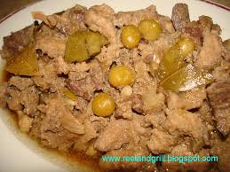

Home
IGADO

Description
Igado (or higado) is a Filipino pork dish originating from the Ilocos Region in the Philippines. Its name means "liver" in Spanish for which it features, although it may include other pork meats and offal also.
The pork―liver, meat, and offal―are sliced into tiny pieces and simmered with bell pepper and green peas, producing a dish often likened to the menudo. Unlike menudo, igado typically uses soy sauce (or patis) and vinegar rather than tomato sauce. Also, potatoes and carrots are optional.
Ingredients
- 1/2 kg pork, sliced into small pieces
- 1/2 kg pork liver, sliced into small pieces
- 1 knorr pork cube
- 3 laurel leaves
- 1 onion
- 5 cloves of garlic
- 6 tablespoon of soy sauce
- 5 tablespoon of white vinegar
- salt and pepper as much as we prefer
- 1 red bell peppper
- 1/2 cup of green peas
- 1 carrot
Instructions
- First, you will need to grab the kidney, and then put this in a pot. Add 4 thumbs of ginger, and then boil these together for a minimum of 30 minutes. Afterwards, you can take the kidney out, and wait for it to cool.
Once it does, you can go ahead, and cut this up into 2-inch strips.
Now we will pour 2 tablespoons of cooking oil inside a pan. Get the pork liver, and start sauteing this. Once youve done this for 2 minutes, you can take the liver out of the pan. Afterwards, we will add the 2 tablespoons left of cooking oil in the same pan, and let this all heat up. Then put your garlic and onion inside, and saute these.
When the onion is soft, you can incorporate the pork kidney you prepared earlier. Cook all of these for 1 minute. Now put the pork tenderloin inside, and saute this until the exterior becomes light brown.
- How about integrating a whole lot of classic Igado flavor into our dish? Mix in your soy sauce and vinegar, and wait for everything to boil. Once it does, stir everything up, and then put your laurel leaves and water inside. We will get this to boil again, and then get the medium to low or medium setting.
Keep everything cooking for a good 40 minutes to integrate those spices together. Place your Knorr Pork Cube inside afterwards, and wait for 8 minutes. Lets go ahead, and put the pork liver back inside, and then stir the mixture. Cook this for 3 minutes.
- Its time to also grab our bell peppers, carrots and green peppers, and incorporate these into the dish. Then season everything with some ground black pepper and salt. After that, you just have to let everything cook for two minutes. And there you go! You have made a delicious Igado dish perfectly!